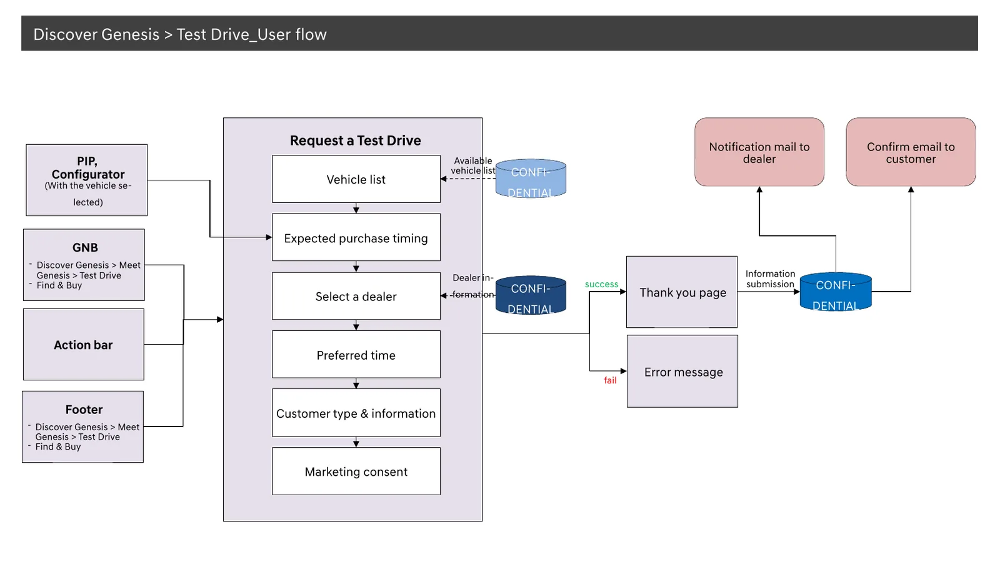
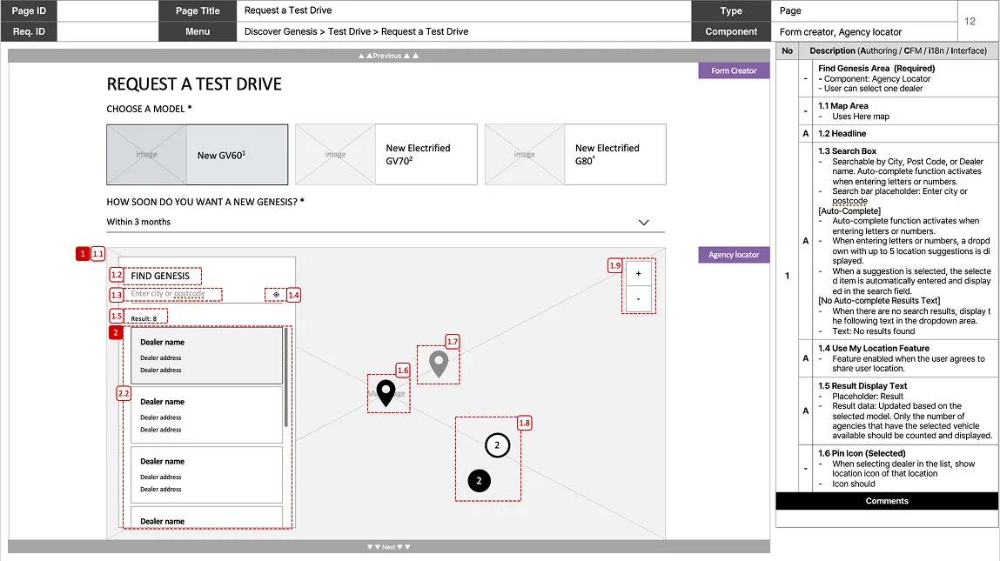
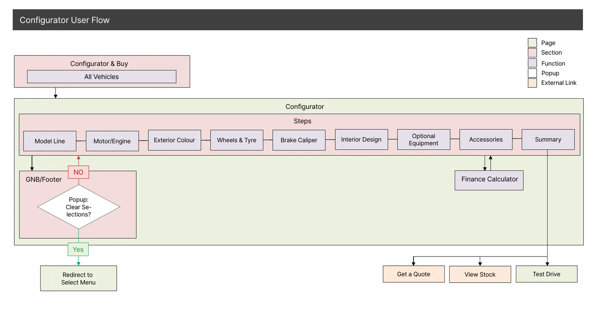
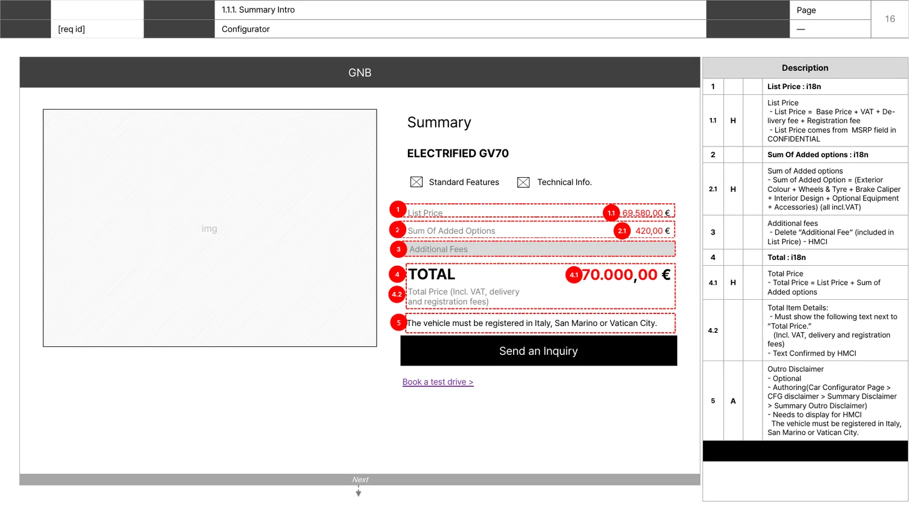
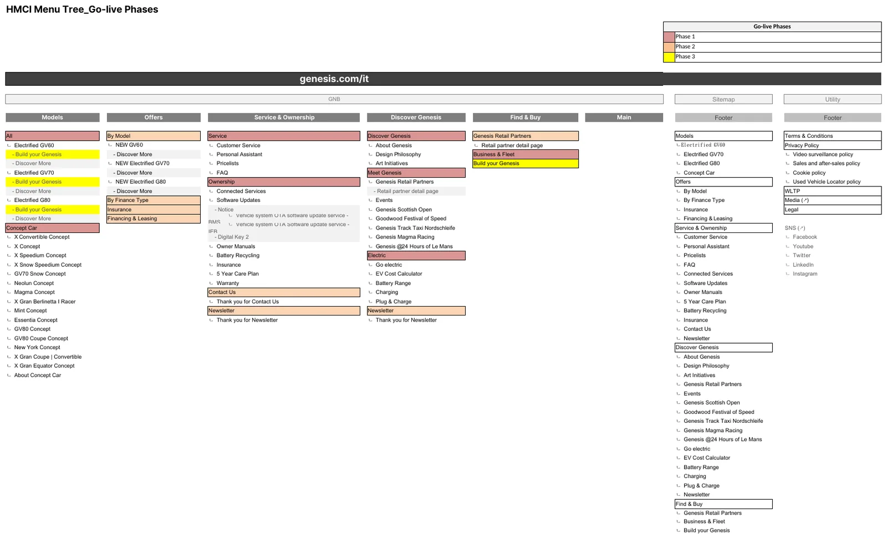
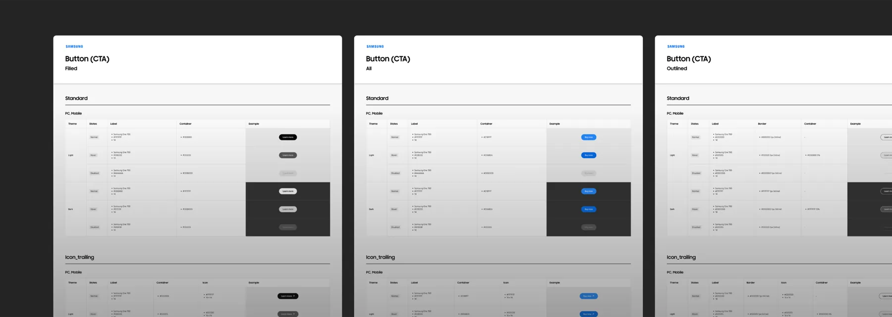
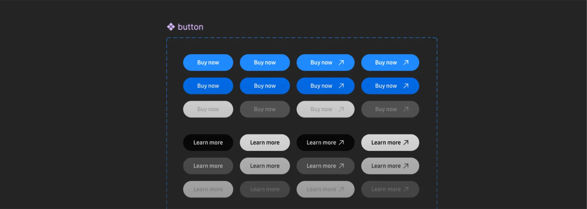
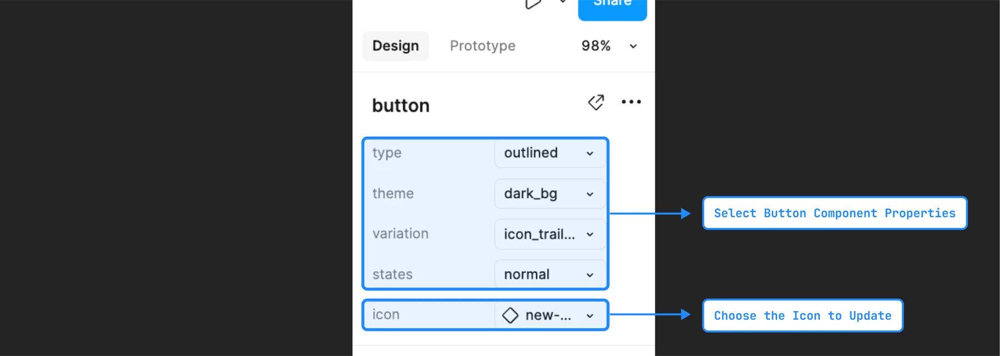

Deliverables
산출물
Selected work
프로젝트 페이지가 왜 그렇게 결정했는지를 말한다면, 여기는 그래서 무엇을 그려냈는지를 봅니다. 유저 플로우로 전체 흐름을 잡고, 화면마다 기능을 번호 단위로 정의해 개발이 그대로 구현할 수 있게 한 산출물이에요.If the case pages say why I decided what I did, this is what I actually drew. User flows to frame the whole path, then every screen specified feature by numbered feature so engineering could build it as-is.
사고는 프로젝트에서,
실행은 여기에서Thinking in the cases,
execution here
실제로 작업한 산출물이에요. 내부 자산 경로·백엔드 시스템명·연락처·요구사항 ID 같은 기밀만 Confidential로 가렸습니다. 원본은 클라이언트 자산이라 게시하지 않아요.These are real deliverables. Only confidential details are masked as Confidential: internal asset paths, backend system names, contacts, requirement IDs. The originals are client assets and aren’t published.
시승 신청을 유저 플로우로 먼저 잡았어요. 어디서 들어오고(진입), 무엇을 고르고, 성공·실패가 어디로 가고, 뒤에서 어떤 시스템과 붙는지까지 한 장에 정리했죠. 그다음 신청 폼을 화면 단위로 펼쳐, 모델 선택·일정·딜러 찾기를 번호로 짚고 오른쪽 표에 동작을 1:1로 적었습니다. 흐름과 화면을 같이 봐야 개발이 추측 없이 구현되거든요.I mapped the test-drive request as a user flow first: entry points, what you choose, where success and failure go, and which systems it hooks into, all on one sheet. Then I opened the request form screen by screen, numbering model selection, scheduling, and dealer search, with each behavior written 1:1 in the table on the right. Flow and screen have to be read together for engineering to build without guessing.I started the test-drive request as a user flow: where people enter, what they pick, where success and failure go, and which backend systems it connects to, all on one page. Then I unfolded the request form screen by screen, pinning model selection, scheduling and dealer search by number with behavior mirrored 1:1 in the table. Flow and screen have to be read together for engineers to build without guessing.


요약Summary
진입부터 성공·실패 분기, 백엔드 연동까지 한 장에 정리하고, 화면 기능은 번호 단위로 명세해 개발이 추측 없이 구현할 수 있게 했습니다.Mapped the whole path (entry, success and failure branches, backend integration) on one sheet, and specified screen behavior number by number so engineering could build without guesswork.Mapped the whole path (entry, success/failure branches, backend connections) on one page, and specced each screen's behavior by number so engineering could build it without guessing.
차량을 직접 구성(Configurator)하는 여정이에요. 모델 라인부터 엔진·색상·휠·인테리어·옵션을 거쳐 Summary까지 가는 단계 흐름을 먼저 정의하고, 핵심인 Summary 화면을 펼쳤습니다. 가격(부가세·등록비 포함)·금융 계산·법적 디스클레이머가 한 화면에 얽히는 곳이라, 무엇을 어떤 순서로 보여주고 어떤 문구를 띄울지를 번호 단위로 적었어요.The configurator journey: I defined the step flow from model line through engine, color, wheels, interior, and options to Summary, then opened the Summary screen itself. It’s where price (incl. VAT and registration), finance calculations, and legal disclaimers collide on one screen, so I specified what appears in what order and which wording shows, item by numbered item.The journey of configuring a car yourself: I defined the step flow from model line through engine, color, wheels, interior and options to the Summary, then unfolded the Summary itself. It's where price (incl. VAT and registration), finance calculation and legal disclaimers all tangle on one screen, so I specced what shows in what order and which copy appears, by number.


요약Summary
가격·금융·법적 고지가 한 화면에 모이는 Summary에서, 무엇을 어떤 순서로 보여주고 어떤 문구를 띄울지까지 번호 단위 명세로 정리했습니다.On the Summary, where price, finance, and legal notices meet, I specified what shows in what order and in what wording, item by item.On the Summary, where price, finance and legal notices converge, specced what shows in what order and which copy appears, down to the numbered item.
Genesis 사이트의 메뉴 구조 전체를 정의했어요. Models·Offers·Buy·Owners·Service부터 Footer까지 1~4 depth로 펼치고, 단순히 '무엇이 있나'에서 멈추지 않고 무엇을 언제 여는지까지 단계(Phase 1·2·3)로 색을 입혀 한 장에 담았습니다. 화면을 그리기 전에 이 뼈대를 먼저 합의해야, 뒤따르는 모든 화면기획이 같은 구조 위에서 움직이거든요.I defined the entire menu structure of the Genesis site, expanding Models, Offers, Buy, Owners, Service and the footer across four depths. It doesn’t stop at “what exists”: color marks what opens when (Phase 1, 2, 3) on the same sheet. This skeleton has to be agreed before any screen is drawn, so every screen spec that follows sits on the same structure.

◆ 색은 오픈 단계(Phase 1·2·3)를 뜻합니다.◆ Color indicates the go-live phase (1, 2, 3).
요약Summary
화면을 그리기 전에 사이트 전체 메뉴 구조와 오픈 순서를 먼저 정의해, 이후 모든 화면기획이 같은 구조 위에서 진행되도록 했습니다.Defined the site’s full menu structure and go-live order before any screen was drawn, so every later spec ran on the same structure.Defined the site's full menu structure and release order before any screen, so every later spec proceeded on the same structure.
Sketch·XD로 흩어져 있던 컴포넌트를 Figma 라이브러리 하나로 일원화했어요. 스펙·변형·사용법을 한 체계로 정리해, 팀이 같은 컴포넌트를 같은 규칙으로 쓰게 만들었습니다.Components scattered across Sketch and XD were consolidated into a single Figma library. Specs, variants, and usage were organized into one system so the team uses the same component under the same rules.



요약Summary
여러 툴에 흩어져 있던 컴포넌트를 단일 Figma 라이브러리로 표준화하고, 스펙·변형·사용법까지 문서로 정리했습니다.Standardized components spread across tools into one Figma library, with specs, variants, and usage documented.Standardized components scattered across tools into one Figma library, documented down to specs, variants and usage.